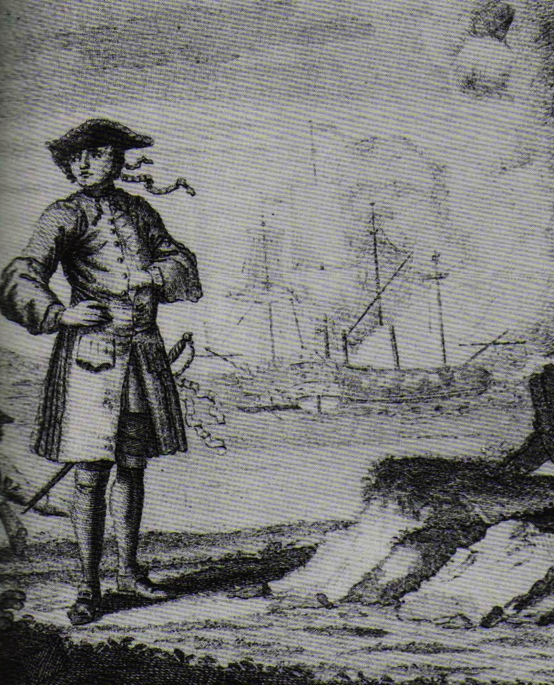
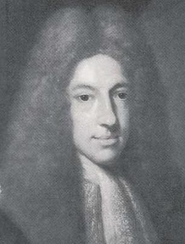
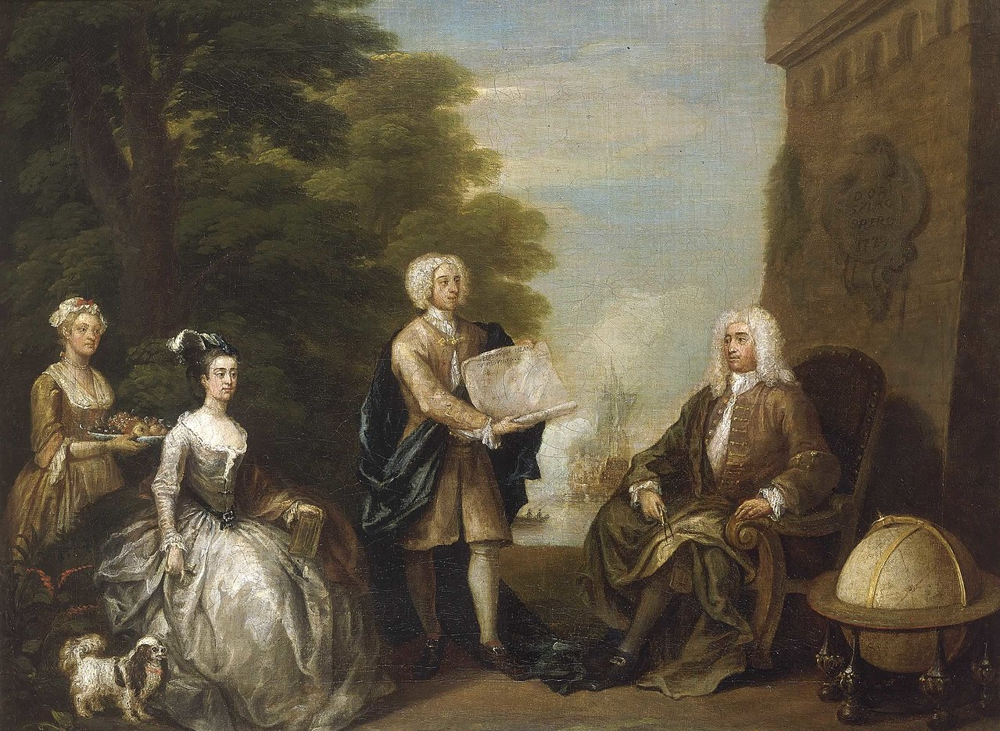

Zatoka Piratów
.jpg)
Edward "Czarnobrody" Thatch - postrach mórz, bezsprzecznie najsłynniejszy pirat złotej ery. Jego zła sława jest o tyle zaskakująca, że stronił od rozlewu krwi. Wystarczyła salwa z czterdziestu dział i parę groźnych min, aby cudze kosztowności same trafiały do jego kieszeni.
ur. około 1675, zm. 22 listopada 1718 – angielski pirat, w latach 1716–1718 grasujący na Morzu Karaibskim, jeden z najgroźniejszych piratów swojego okresu.
Został kapitanem w rezultacie buntu zainspirowanego przez siebie na statku, na którym służył. Wcześniej był kaprem i napadał marynarkę francuską jako pirat, ale z błogosławieństwem króla brytyjskiego. Używał głównie broni palnej, ale nie był też złym szermierzem. Po zakończeniu wojny między Francją i Wielką Brytanią dalej zajmował się napadami na statki, również na życzenie króla brytyjskiego.
Ataki na inne statki prowadził początkowo na niewielkim slupie, a następnie na zdobycznym francuskim okręcie La Concorde, przemianowanym na Queen Anne’s Revenge (Zemsta Królowej Anny). W szczytowym momencie kariery – wiosną 1718 roku – dysponował 4 okrętami, 60 działami i ok. 400 ludźmi.
Według legend Czarnobrody zapragnął sprawdzić jak jest w piekle. W tym celu nakazał zapalić w ładowni swojego statku siarkę, a w toksycznym dymie wytrzymał najdłużej z całej załogi.
Podobno, aby wyglądać straszniej, na brodę wiązał czerwone wstążki, do kapelusza przyczepiał zapalone lonty, a na ramieniu nosił sześć załadowanych pistoletów. Zdarzało się, że odpalał działa za pomocą swojej uprzednio podpalonej brody.
Zginął w trakcie potyczki z dwoma okrętami dowodzonymi przez angielskiego porucznika Roberta Maynarda działającego na polecenie gubernatora Wirginii Aleksandra Spotswooda. Nigdy jednak nie udało się złapać ok. 200 piratów. Również jego skarb (największy pojedynczy łup oszacowany jest na sumę 325 tys. funtów; dzisiaj to równowartość 6 milionów funtów) od blisko 300 lat pozostaje nieodnaleziony.

Edward "England" Seegar - urodzony w Irlandii pirat działający u wybrzeży Afryki i na Oceanie Indyjskim od 1717 do 1720 r.
Pływał na statku Pearl (który nazwał The Royal James), a później na Fancy, na którą zamienił Pearl w 1720 r. Jego flagą był klasyczny Jolly Roger z czaszką nad dwiema skrzyżowanymi piszczelami na czarnym tle.
Od wielu innych piratów tamtych czasów różniło go to, że nie zabijał pojmanych, o ile nie było to bezwzględnie konieczne. Taka postawa doprowadziła jednak w końcu do jego upadku, ponieważ jego własna załoga zbuntowała się przeciw niemu, kiedy nie zgodził się zabić marynarzy z Cassandry, angielskiego statku handlowego, którego kapitanem był James Macrae. England został pozostawiony swemu losowi na Mauritiusie z dwoma innymi członkami załogi. Zbudowali małą tratwę i dotarli do zatoki St. Augustine na Madagaskarze. England przeżył krótki czas żebrząc o jedzenie i zmarł mniej więcej w końcu 1720 r.

Samuel "Czarny Sam" Bellamy
Samozwańczy Robin Hood pośród pirackiej braci, swojego czasu najbogatszy kapitan na bahamskich morzach. Złupił ponad 53 statki w przeciągu niecałego roku. I choć jego kariera trwała krótko - nie dożył trzydziestych urodzin - zdołał złupić przeszło pół setki nierzadko załadowanych po brzegi okrętów. Na przydomek Księcia Piratów zasłużył sobie także miłosierdziem, jakie okazywał jeńcom.
W 1716 Bellamy razem z grupą ludzi wyruszył z Cape Cod, by szukać skarbu z zatopionego rok wcześniej wraku hiszpańskiej floty skarbów. Bogaty jubiler, Paulsgrave Williams (znany też jako Palsgrave, Paulgraves, Palgraves lub Paul), również późniejszy pirat, dołączył do tej wyprawy i ją sfinansował. Poszukiwania zatopionej floty nie zakończyły się sukcesem; załoga tej wyprawy została piratami pod dowództwem Benjamina Hornigolda na statku „Marianne”, na którym pływał również Czarnobrody. Latem 1716 roku załoga „Marianne” zaczęła być zirytowana faktem, że Hornigold nie chciał atakować angielskich statków, w związku z czym został przegnany z pokładu statku razem ze swoją poprzednią załogą. Pozostali piraci mianowali nowym kapitanem Bellamy'ego. Po przejęciu drugiego statku, „Sultana”, Bellamy przekazał dowodzenie nad „Marianne” Paulsgrave'owi Williamsowi. Przez jakiś czas pływali razem z Olivierem Levausserem, który we wczesnym 1717 opuścił ich, by plądrować Amerykę Południową.
Jednak najbardziej znany łup Bellamy zdobył wiosną 1717 roku, kiedy dostrzegł galerę „Whydah” (również: „Whidaw”) płynącą przez Cieśninę Wiatrów. Statek ten był pełen dóbr, takich jak złoto, indygo, kość słoniowa czy chinowiec, pozyskanych ze sprzedaży niewolników. Bellamy gonił „Whydah” przez trzy dni, zanim zbliżył się na tyle, by zacząć bitwę; jednak kapitan tego statku, Lawrence Prince, poddał się bez walki poprzez spuszczenie flagi. Bellamy, na dowód swojej łaski, zamiast wziąć go w niewolę lub zabić przehandlował swoją „Sultanę” na „Whydah”. Black Sam ulepszył zdobyczny statek do 28 dział i popłynął na północ, w kierunku Nowej Anglii.
Dwa tygodnie po zdobyciu „Whydah” Williams stwierdził, że chce odwiedzić rodzinę w Rhode Island. Bellamy zgodził się i umówił się z nim, że spotkają się z powrotem w okolicach Maine. W tym czasie Black Sam zdobył kilka małych statków, w tym „Anne Galley”, którego kapitanem mianował swojego kwatermistrza Richarda Nolanda.
O północy 26 kwietnia 1717 roku silny sztorm wywiał „Whydah” na piaszczystą mierzeję około 150 metrów od wybrzeża dzisiejszego Wellfleet. 15 minut po północy złamały się maszty, przewracając przeładowany statek do głębokiej na nieco ponad 9 metrów wody. Statek szybko utonął, pozostawiając przy życiu tylko dwóch członków 145-osobowej załogi; zginął także kapitan. 103 z zatopionych ciał zostało wyrzuconych na brzeg i pochowanych przez miejscowego koronera; pozostałych ciał nigdy nie odnaleziono.
Woodes Rogers- (ur. ok. 1679, zm. 1732 w Nassau) – brytyjski gubernator Bahamów, a wcześniej korsarz w służbie brytyjskiej.  To on zakończył pirackie rządy na Bahamach, choć kosztowało go to zdrowie i majątek. Pochodził z zamożnej rodziny kupieckiej i podróżniczej. Opłynął kulę ziemską i jako kapitan statku, uratował uwięzionego Aleksandra Selkirka, którego los uważa się za inspirację powieści "Przypadki Robinsona Crusoe", a potem trafił do więzienia za długi. Dziś uznawany za bohatera narodowego.
Był jednym z bardziej znanych kaprów brytyjskich, wsławiony m.in. najazdem łupieżczym na hiszpańskie miasto Guayaquil w Ekwadorze. Po wojnie wrócił do Anglii i pracy w Admiralicji. Gdy do dalekiego Londynu dotarły wieści o odrodzeniu się pirackiej bazy, rząd brytyjski zdecydował się podjąć zdecydowane działania i mianował gubernatorem Bahamów Rogersa jako człowieka, który na problemie piractwa znał się najlepiej.
W lipcu 1718 roku trzy okręty wojenne Rogersa weszły do zatoki w Nassau. Wielu piratów zdołało uciec (Charles Vane dodatkowo ostrzelał okręt flagowy gubernatora), wielu jednak (jak Jennings i Hornigold) skorzystało z amnestii ogłoszonej przez Rogersa i zeszło z drogi przestępstwa. Wkrótce gubernator mianował Hornigolda swym zastępcą i głównym łowcą piratów, co już w grudniu zaowocowało masowymi wyrokami śmierci.
Bez piratów, którzy sprzedawali tu swe łupy, Nassau zeszło do roli ubogiej osady rybackiej, mimo wysiłków gubernatora Rogersa. Dopiero budowa portu i fortyfikacji oraz sprowadzenie na New Providence kilkutysięcznego garnizonu poprawiło byt miasteczka. Nigdy już jednak (aż po gwałtowny rozwój turystyki w XX wieku) nie osiągnęło takiego bogactwa jak w latach 1716-1718.